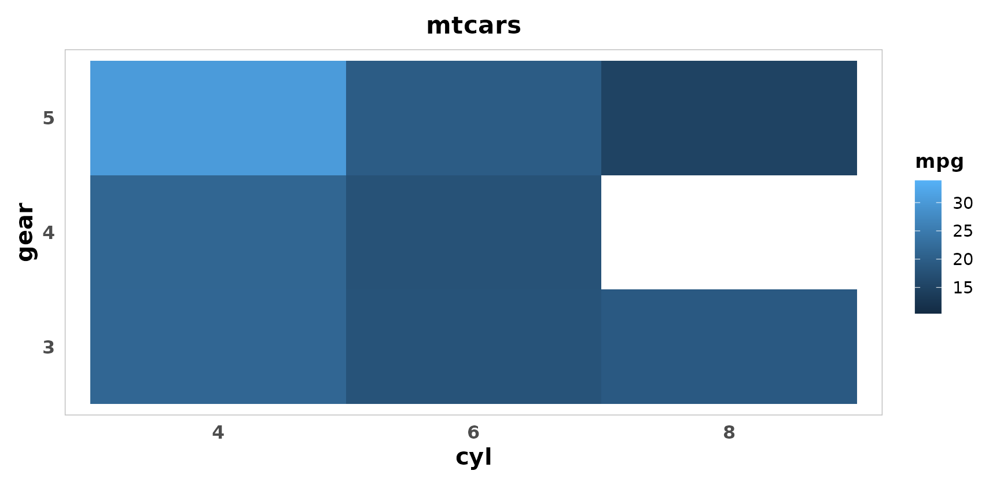
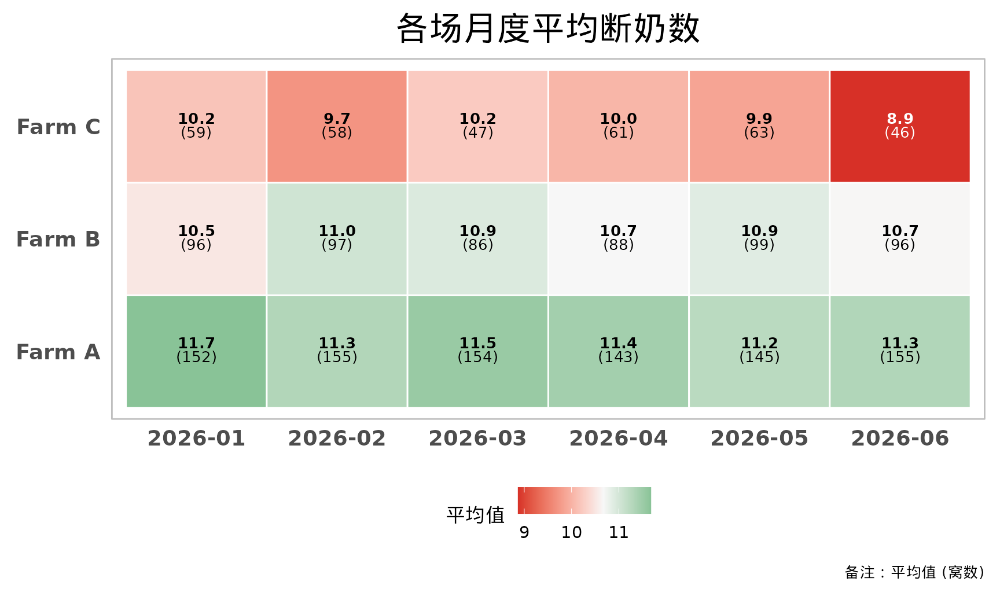

统一主题：get_common_theme()
get_common_theme()
是热图使用的统一主题：标题加粗居中、去掉网格线、分面标题灰底、
说明文字支持 HTML/Markdown。在 plot_performance_heatmap()
中通过 theme_args 传参调整；它本身也可以叠加到任何 ggplot
上，让同一份报告里的图风格统一。
library(ggplot2)
ggplot(mtcars, aes(factor(cyl), factor(gear), fill = mpg)) +
geom_tile() +
labs(title = "mtcars", x = "cyl", y = "gear") +
get_common_theme(x_axis_angle = 0, title_size = 16)
在热图中调整主题
get_common_theme() 的所有参数都可以放进
theme_args 传给 plot_performance_heatmap()。
比如投屏时把字号整体调大、横排 X 轴文字、把图例放到下方：
plot_performance_heatmap(
sow_demo, "month", "farm", "weaned",
title = "各场月度平均断奶数",
theme_args = list(
base_size = 16,
title_size = 22,
axis_text_size = 14,
x_axis_angle = 0,
legend_position = "bottom"
)
)
拼写错误的参数会直接报错，而不是被悄悄忽略：
plot_performance_heatmap(
sow_demo, "month", "farm", "weaned",
theme_args = list(axis_txt_size = 14)
)
#> Error:
#> ! `theme_args` 中有 get_common_theme() 不支持的参数：axis_txt_size中文字体：enable_cn_font()
在 RStudio 里预览图片时中文通常显示正常，但用 ggsave()
导出 PNG、或在没有中文字体的
服务器上运行时，中文可能变成方框。enable_cn_font() 调用
showtext 解决这个问题。
注意 dpi 必须和导出时一致：showtext 默认按 96 dpi
渲染文字，如果用 ggsave(dpi = 300) 导出而这里没有设成
300，图片中的文字会明显偏小。
#' \dontrun{
# 脚本开头调用一次
enable_cn_font(dpi = 300)
p <- plot_performance_heatmap(sow_demo, "month", "parity", "weaned")
ggplot2::ggsave("heatmap.png", p, width = 12, height = 7, dpi = 300)
# 使用指定的字体文件（例如 Windows 上的微软雅黑）
enable_cn_font(dpi = 300, family = "C:/Windows/Fonts/msyh.ttc")
p + ggplot2::theme(text = ggplot2::element_text(family = "cn"))
#' }